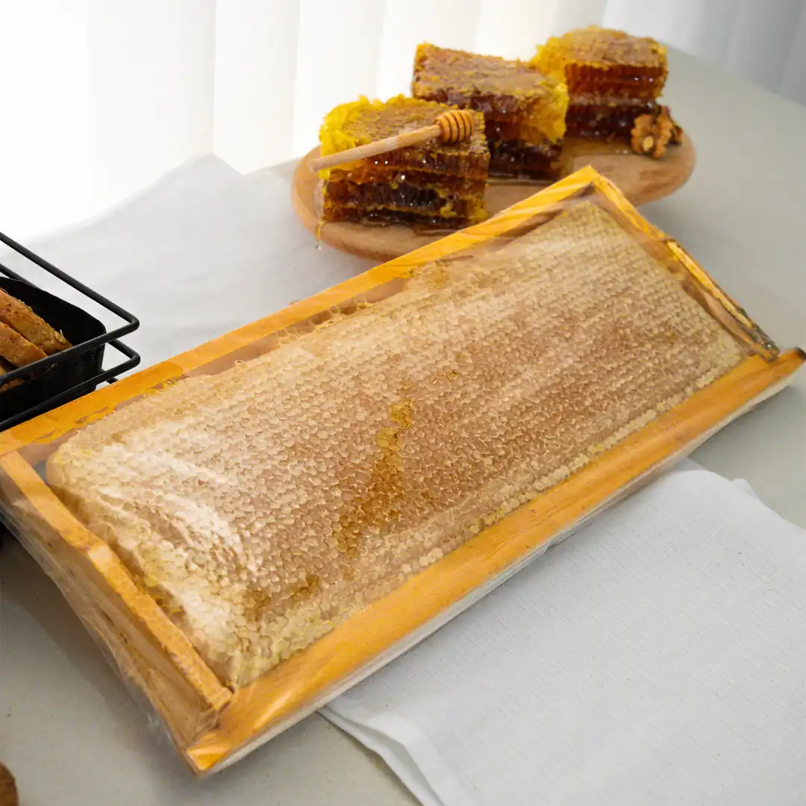
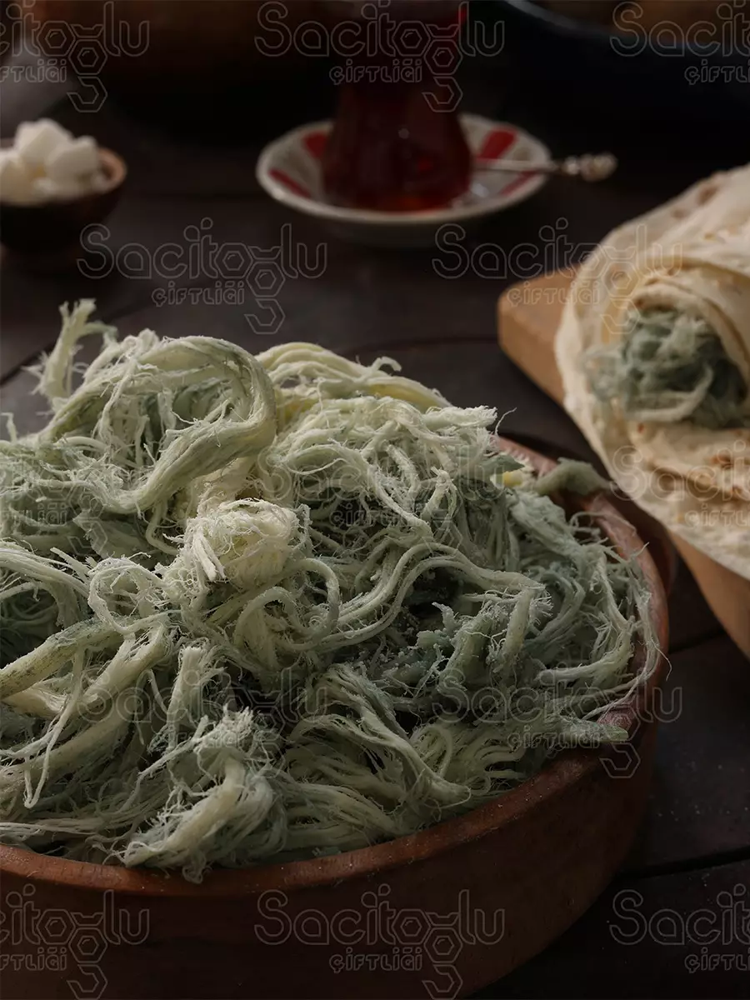
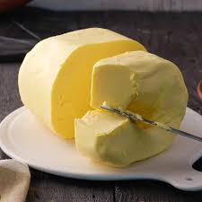

Kars Yöresel Ürünleri

Kars Peyniri(1kg)
Doğal inek sütünden üretilen, yoğun aromalı ve uzun süre olgunlaştırılmış geleneksel Kars peyniri.
₺850
Kars Balı(2.5kg)
Yüksek yaylalarda üretilen, doğal çiçek özleriyle zengin aromaya sahip katkısız bal.
₺1.950
Göğermiş Peynir(350gr)
Özel olgunlaştırma yöntemiyle hazırlanan, kendine özgü lezzeti ve aromasıyla bilinen yöresel peynir
₺400
Kars Tereyağı(1kg)
Geleneksel yöntemlerle üretilen, kahvaltı ve yemeklerde yoğun aroma sunan doğal tereyağı.
₺750